Produtos
Trabalhos feitos na Esquadriper. Gostou de um? Mande a foto pelo WhatsApp e peça o orçamento na medida do seu espaço.
Portões e cercas
Portões de chapa, de lambril e de ferro forjado, cercas de ferro e de inox com vidro, e portão de escada.
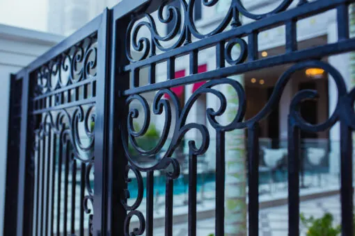
Cerca e portãoFerro forjado 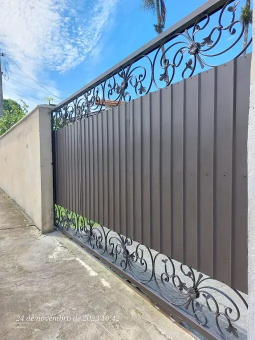
Portão de chapaChapa com arremate forjado 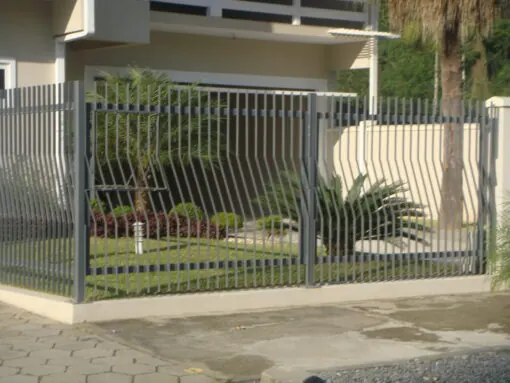
Cerca e portãoFerro 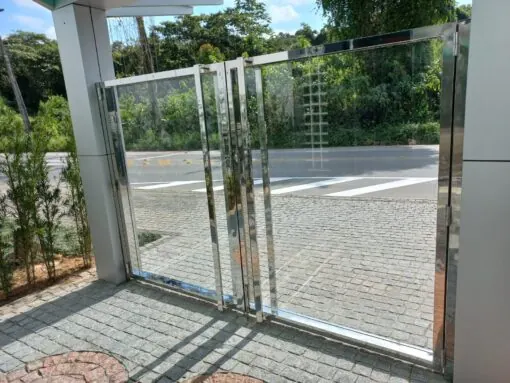
Cerca e portãoInox e vidro 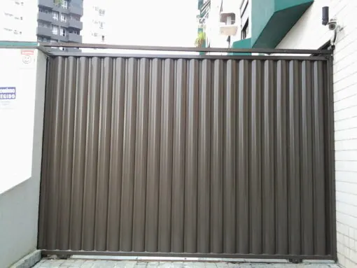
Portão de lambrilChapa 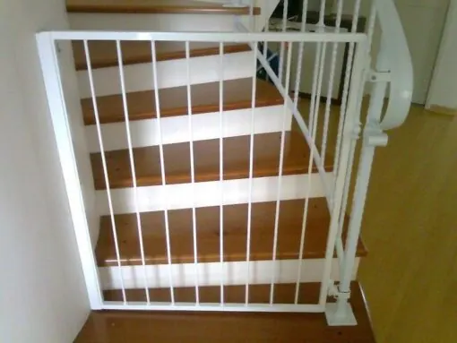
Portão de escadaFerro
Guarda-corpos e sacadas
Guarda-corpo para sacadas em ferro forjado, ferro, inox e alumínio.
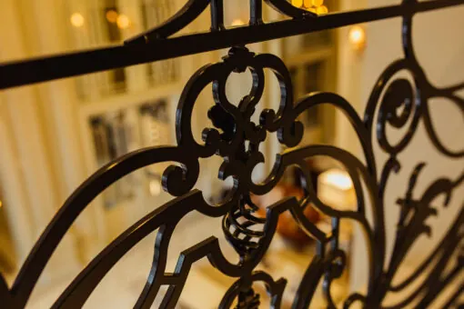
SacadaFerro forjado 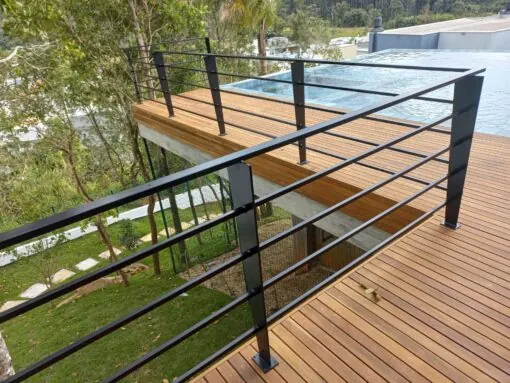
Guarda-corpo de deckFerro 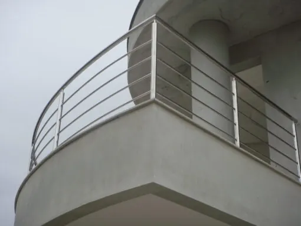
Sacada curvaInox 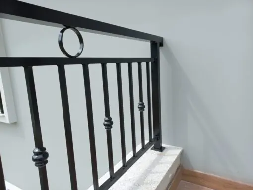
SacadaAlumínio
Corrimãos e escadas
Corrimão de escada e de parede, inclusive no padrão exigido pelos bombeiros.
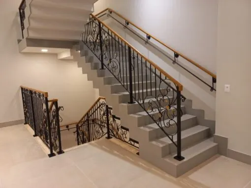
Corrimão de escadaFerro forjado 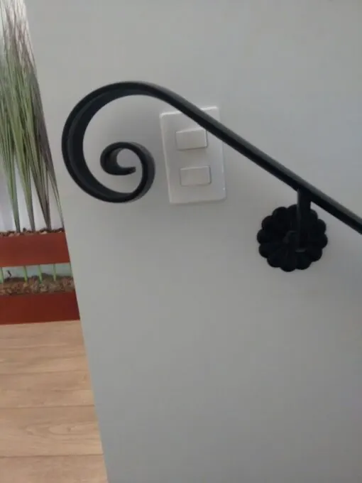
Corrimão de paredeFerro forjado 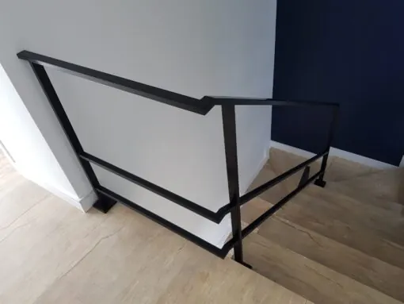
CorrimãoFerro 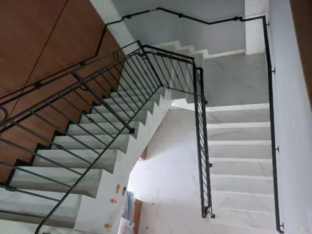
Corrimão padrão bombeiroFerro 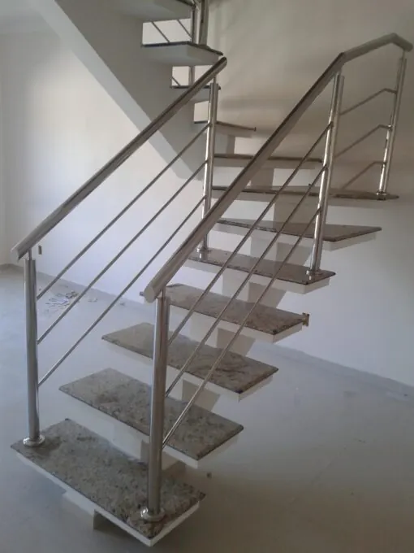
Escada com corrimãoInox 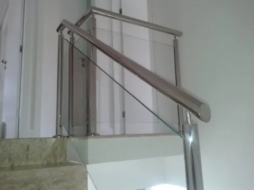
Corrimão com vidroInox e vidro 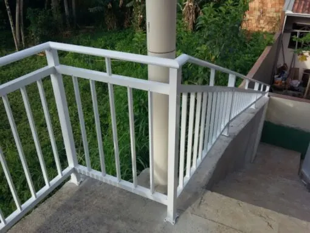
CorrimãoAlumínio 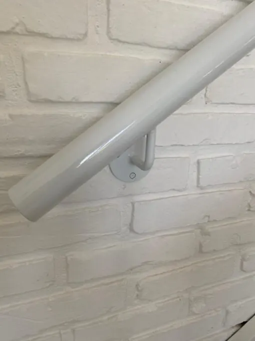
Corrimão de paredeAlumínio
Grades
Grades para janelas e portas, proteção para portas e pantográficas.
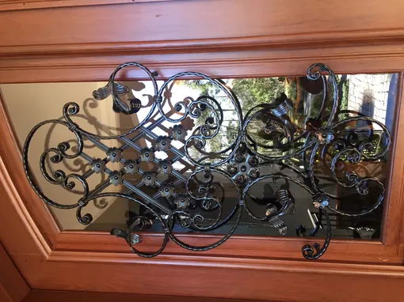
Grade para portaFerro forjado 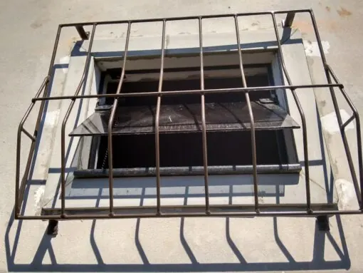
Grade para janelaFerro 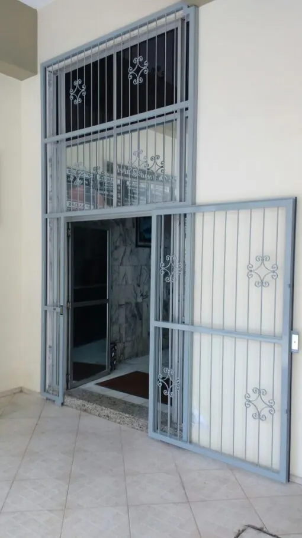
Proteção para portaFerro 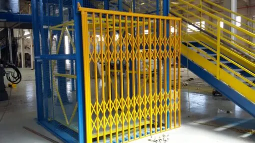
PantográficaFerro
Portas
Portas de chapa, de ferro, de lambril e veneziana, de elevação e portas forjadas.
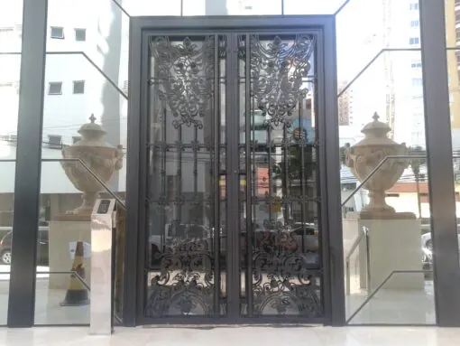
Porta forjadaFerro forjado 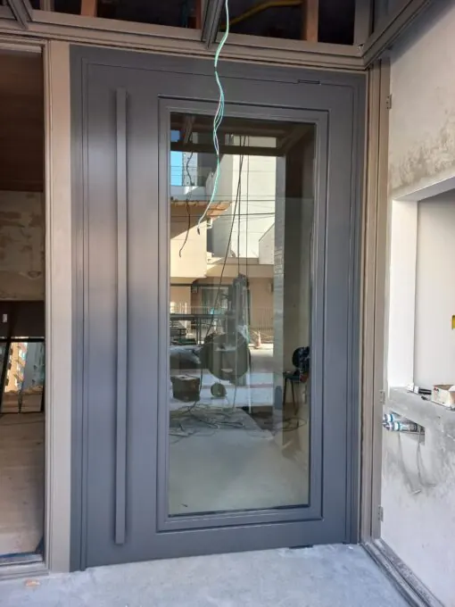
Porta de ferroFerro 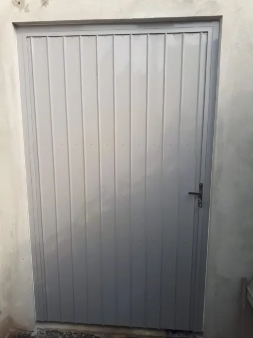
Porta de chapaChapa 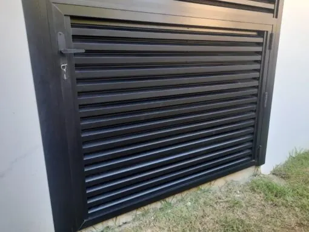
Porta de lambril e venezianaChapa 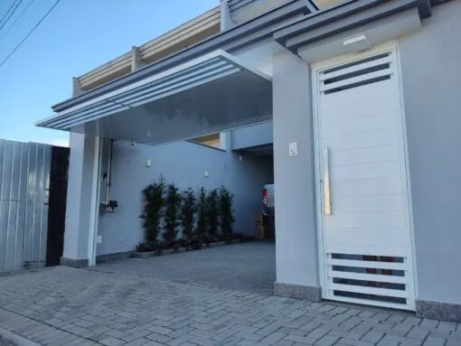
Porta de elevaçãoChapa
Móveis e decoração
Linha de móveis industriais em aço carbono galvanizado, com pintura eletrostática. Também bases para móveis, prateleiras e espelhos.
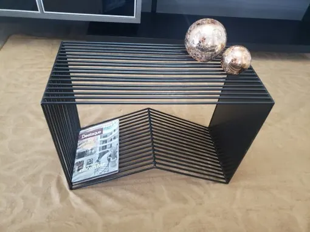
MesaAço carbono 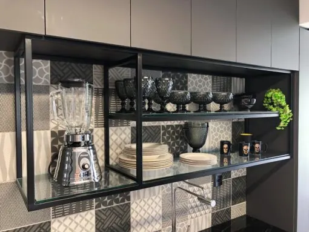
PrateleirasAço carbono 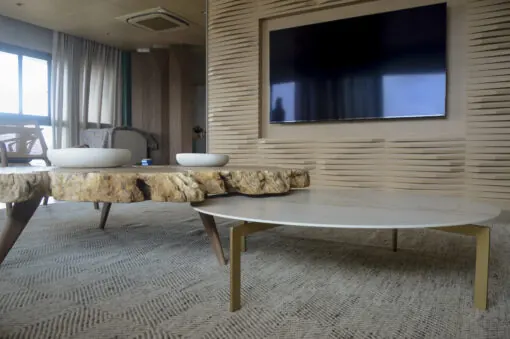
Base para móveisAço carbono 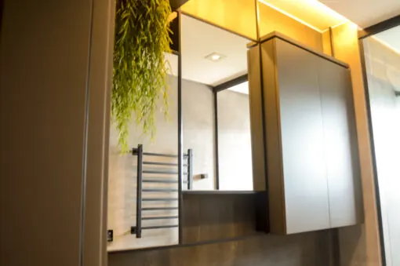
Espelho com molduraAço carbono
Peça seu orçamento
Mande pelo WhatsApp o que precisa, com fotos ou o projeto. Atendemos residências, comércio e indústria.